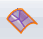
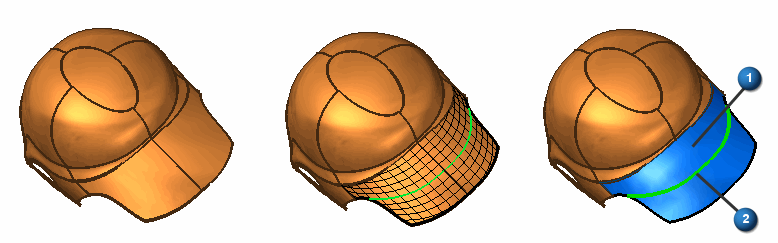

Construct a redefine surface
-
Choose Surfacing tab→Surfaces group→Redefine Surface

. -
Select the faces to be replaced, and then click the Accept (check mark) button.
-
Adjust the continuity settings or command options settings and then click Preview.
-
(Optional) Insert a sketch by doing the following:
-
Select the Insert Sketch Step, and then specify the plane type for which the sketch will be created on.
-
Select a location for the sketch or pick U/V curve for which you desire to be included in the new sketch, and then click the Accept (check mark) button.
In the example below 1 is the replaced surface and 2 is the inserted sketch generated from the selected U/V curves on the surface by the Redefine Surface command.

-
-
Finish the feature.